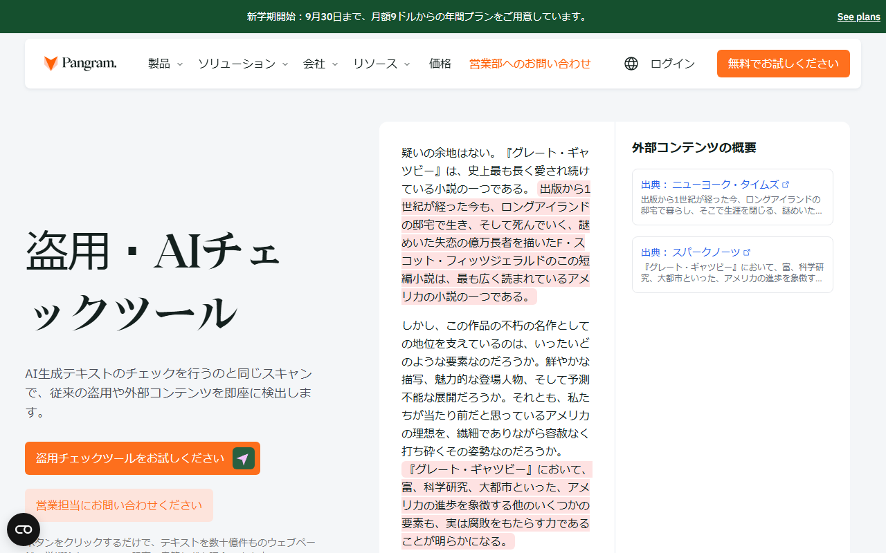
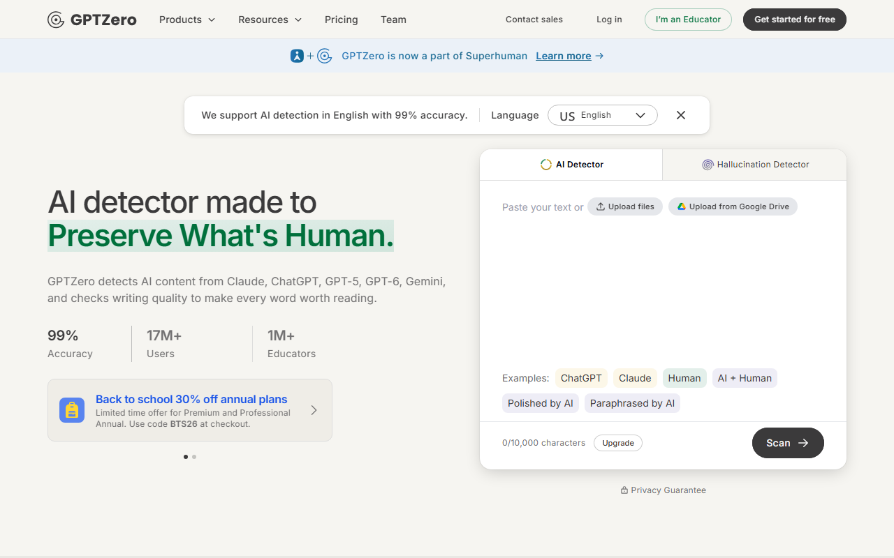
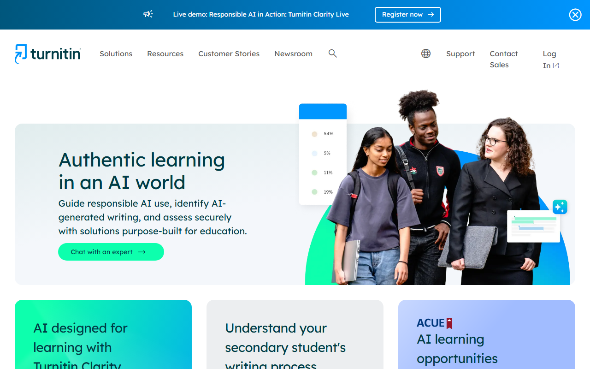

AIチェッカーおすすめ3選｜日本語対応・無料範囲・判定の限界を比較
AIチェッカーは、レポートや外注記事がAIで作られた可能性を調べる補助ツールです。ただし、判定だけでは執筆者まで断定できません。
各製品が日本語文に対応しているか、無料でどこまで使えるかを比べます。料金と判定後に人が調べる手順も紹介します。
AIチェッカーおすすめ3選の早見（無料枠・料金・契約形態）
- Pangram Free：無料／1日2,000 words
- Pangram Individual：月$20／月払い
- GPTZero Free：無料／月10,000 words
- GPTZero Premium：月$23.99／月払い
- Turnitin Originality：要見積／機関契約
迷ったらPangramがおすすめです。日本語文の検知対応が明記され、Freeはカード登録なしで使えます。
日本語の製品説明を読め、無料版の始め方も分かります。
AIチェッカーの選び方｜日本語・無料範囲・利用人数・判定後の流れを見る
「日本語対応」という表示や、一つの判定率だけでは選べません。 無料枠と契約形態を比べ、判定後に何を調べるかも決めておきます。
- 日本語文を検知対象にしているか、画面・資料・有人サポートも日本語か
- 無料枠が語数、回数、日単位、月単位のどれで決まるか
- 1人で原稿を見るか、教育機関・企業で複数人が使うか
- 疑わしい結果が出た後に、原稿や編集履歴を確認できるか
日本語入力・日本語UI・日本語での判定品質を分ける
「日本語対応」が指す範囲は、製品ごとに異なります。文章を検知できても、画面や資料、有人サポートまで日本語とは限りません。公開情報で分かる範囲は次のとおり。
- Pangram：日本語文の検知に対応。公式サイトとヘルプには日本語ページがあります。ダッシュボード全体の日本語化と日本語の有人サポートは不明です。
- GPTZero：公式ページによって対応言語の説明が異なり、日本語文を検知できるかは確定できません。日本語UI・日本語資料・日本語の有人サポートも不明です。
- Turnitin Originality：日本語文のAI writing detectionに対応。Web版の公式UI言語一覧に日本語はありません。日本語ガイドと日本語の導入問い合わせフォームはありますが、有人サポートの範囲は不明です。
本記事では、どの製品も日本語文での判定品質を実測していません。短文や敬語文に加え、箇条書きや固有名詞が多い文章も、後述する方法で試してください。
無料枠は語数・回数・期間で比べる
無料枠は、Pangramが1日2,000 words、GPTZeroが月10,000 wordsです。画像判定は1日3回まで。Pangramの公式トップでは1日20 free checksとも案内されています。見るのは入力語数とチェック回数の両方。一方、Turnitin Originalityには個人向け無料プランも公開セルフサーブ試用もありません。
「無料」という表示に加え、枠が戻る時期と上限の数え方も調べてください。各社が示すwordsは日本語原稿の分量と単位が異なるため、機械的に換算せず、実際の原稿を入れたときの消費表示を基準にします。
個人で使うか、教育機関・企業で使うかを決める
1人で原稿を一つずつ確かめるなら、PangramかGPTZeroの無料枠から。複数人で使う場合は、PangramのTeamかGPTZeroのTeam・Enterpriseが候補です。必要な席数と管理機能を伝え、契約前にデータの扱いも問い合わせます。
教育機関で提出物を継続的に扱うなら、Turnitin Originalityのような組織向け製品が候補です。個人向け無料チェッカーとは契約方法も管理機能も異なるため、価格だけで比べるのは適しません。
判定後に原稿・履歴・本人説明を確認できるかを見る
AIチェッカーの役割は、調査する文書を絞るところまで。スコアが高い文書では、引用の示し方と下書きを見ます。変更履歴と参照資料も調べ、必要なら書き手に作成過程を説明してもらいます。
反対に、スコアが低くても内容が正しいとは限りません。事実誤認や出典不足、独自情報の有無は、AI判定と分けて人が調べます。
AIチェッカーおすすめ3選
Pangramは日本語文への対応が明記され、自分で登録して無料枠から始められます。GPTZeroにも無料枠はありますが、日本語対応は未確定。教育機関向けのTurnitin Originalityは、問い合わせて導入する組織向け製品です。 掲載順は精度ランキングではありません。
Pangram｜日ごとの無料枠から始めたい人向け

公式サイトは日本語で表示され、無料で試す案内もあります。
Freeはカード登録が不要で、1日2,000 wordsまで使えます。画像判定は1日3回まで。20を超える言語に対応し、ブラウザ拡張とGoogle Docs連携も案内されています。少量の文書を毎日調べたい個人や編集担当者に向く製品です。
有料版の料金は次のとおりです。円換算には、1ドル=159円（執筆時点の目安）を使いました。金額は為替で変わります。
- Individual：$20/月。年払いは$15/月相当で、月払いが約3,180円、年払いの月額換算が約2,385円
- Professional：$65/月。年払いは$45/月相当
- Team：2 seatsから$20/seat/月
- Developer API：提供あり
- 教育機関・Enterprise：要見積
料金はUSD建てで、請求先は登録済みの支払方法です。日本発行カードと請求書への対応は公開情報では不明で、日本語の有人サポートも同様。解約はPlan and Usageから手続きし、当期末まではcreditsと利用権が残ります。
Freeは支払方法を登録せずに使い続けられますが、7日間の有料機能トライアルとは別の制度です。トライアルを始めると、終了前に解約しない限り有料契約へ移行します。
無料枠から始める場合も、現在の語数・回数上限とトライアル後の移行条件を確認してください。
GPTZero｜月ごとの無料枠と文書判定を比べたい人向け

英語表示の画面には、文章入力欄と「Get started for free」が見えます。
GPTZeroのFreeは月10,000 wordsまでで、Chrome Extensionも利用可。無料版と有料版では、1回に入力できる語数とbatch uploadで扱える文書数が異なります。月間枠だけでは一括処理できるか分からないため、無料版に普段の原稿を入れて試してください。
Premiumは$23.99/月で、年払いなら$12.99/月相当。月300,000 wordsまで使えます。Professionalは$45.99/月で、年払いなら$24.99/月相当です。こちらは月500,000 wordsまで。Team・Enterpriseは複数seatまたは要見積となります。
支払いはUSD建てで、主要カード4ブランドとPayPalが案内されています。日本発行カードと請求書への対応は不明。日本語UIと日本語の有人サポートも同様です。解約手続きはSettingsのCancel Planで、当期末に発効。1〜3か月のpauseも選べますが、一般的な返金条件は契約前に問い合わせてください。
Freeで試す際は、月間10,000 wordsに加えて、1回の入力上限が普段の文書量に合うかを確認します。
Turnitin Originality｜教育機関で組織導入したい方向け

英語表示の画面には、教育向けの説明と「Contact Sales」が見えます。
教育機関向けのTurnitin Originalityは、文書確認用の製品です。日本語文のAI writing detectionに対応し、Authorship reportとdocument metadataも扱います。一方、AI paraphrasing／bypassing detectionは英語文のみ。個人向け無料プランも公開セルフサーブ試用もありません。
料金は非公開・要見積。Web版の公式UI言語一覧に日本語はありませんが、日本語ガイドと日本語の導入問い合わせフォームはあります。有人サポートと国内での支払いは、見積時の確認項目。請求書と解約条件も尋ね、導入規模や既存システムとの連携を伝えてください。
教育機関が機能と契約条件をまとめて相談する製品です。個人向け無料ツールと同じ選び方はできません。
同じ3種類の日本語文で判定結果を確かめる方法
用意した3種類の文を同じ条件で判定し、スコアだけでなく誤判定とツール間の差を記録します。 製品ごとに別の文章を使うと、文章とツールのどちらが差を生んだのか分かりません。
人間文・AI文・編集済みAI文を同じ長さで用意する
用意する文章は次の3種類です。
- 人間文：人が最初から書いた文
- AI文：同じテーマをAIに書かせた文。生成モデルと指示内容を記録
- 編集済みAI文：AI文の構成と表現を人が直した文。直した箇所を記録
3つは、長さとテーマ、言語をそろえてください。
公開済みの記事を人間文に使う場合は、出所を残します。試験の途中で文章を足したり、製品ごとに設定を変えたりせず、条件を固定してください。
スコアだけでなくハイライト箇所と判定不能も記録する
条件と結果について、次の項目を記録します。
- 文章：出所・長さ・言語
- 生成条件：モデル・指示内容
- 編集条件：人が直した箇所
- 判定記録：日時・ツール・結果
- 補足：誤判定候補・判定不能
AIの可能性を示す数字だけでは不十分です。ハイライトされた文や、短すぎて判定できなかった例も残します。
判定を読み違えないため、次の2つを分けて記録します。
- 人間文をAI生成と判定：誤検出の可能性
- AI文を人間文と判定：見逃しの可能性
総合点を作るより、普段扱う日本語文で起きた間違いを見てください。その記録をもとに、判定後に人がどこまで調べるかを決めます。
Turnitinは利用できる組織だけ同条件で確認する
公開セルフサーブ試用がないため、個人はTurnitin OriginalityをPangramやGPTZeroと同じ条件ですぐに比べられません。利用契約のある組織だけが、許可された範囲で同じ3種類の文章を試します。
利用できない製品の欄は推測値で埋めず、欠測として扱います。比較対象がそろわない場合も、2製品の結果からTurnitinの判定を推定してはいけません。
AIチェッカーの仕組みと限界｜スコアだけで執筆者を断定しない
AIチェッカーは文章の特徴からAI生成の可能性を推定する補助ツールです。 数値を見るときは、判定した文章の条件と測定時点も押さえます。
文章の規則性やばらつきから可能性を推定する
パープレキシティは次の語を予測しにくい度合いで、バースティネスは文の長短や構造のばらつきを表します。ただし、3製品がこれらを同じ重みで使うかは非公開。内部ロジックを推測し、精度の順位を付けるのは避けます。
短文・定型文・編集済み文章では結果が揺れやすい
判定が揺れやすい文章には、短文や定型的な案内文があります。人が大きく編集したAI文も、元の特徴が変わった状態。日本語では敬語や箇条書きに加え、引用や固有名詞が多い文もテスト条件に含めてください。
一つの段落だけを切り出した結果と、文書全体の結果が違う場合もあります。普段の文書量に近い長さで判定し、判定不能も正常な記録として残します。
ベンダー公称値・第三者研究・個別テストを分けて読む
精度の数字は、ベンダーの公称値／第三者研究／個別テストに分けます。比較前に見るのは、母数と対象言語。生成モデルや判定の閾値、測定時点も同じ条件とは限りません。
誤検出と見逃しの両方を見て、文章の条件や測定時点、数字の根拠も調べてください。「最も正確」な製品を決めるより、自分の文書で許容できない間違いを先に決めます。
教育機関・企業での使い方｜判定は一次スクリーニングに留める
個人・教育機関・企業では、契約形態が異なります。 教育機関ではTurnitin Originalityを含む組織向け製品、企業ではPangramやGPTZeroのTeam・Enterpriseが候補。見積もりでは席数と管理機能を伝え、APIの有無と保存条件も尋ねてください。
学生レポートは課題設計・下書き・引用と一緒に確認する
学生レポートでは、課題の指示と途中の下書きを照合します。引用・参考文献や授業内での説明も判断材料。教育機関でTurnitin Originalityを導入しても検出結果だけで決めず、結果をきっかけに調査を始めます。最終判断は人が行ってください。
外注記事は編集履歴・出典・契約ルールと合わせて見る
外注記事では、まず判定結果と原稿を見比べます。次に編集履歴と出典を調べ、書き手にも作成過程を尋ねたうえで、人が最終判断します。AIスコアが低くても、出典のない数字や事実誤認があれば品質上の問題。
AI利用の可否は、発注時の契約や執筆ルールで明文化します。禁止・許可の範囲が曖昧なまま、納品後のチェッカーだけで判断すると、書き手との認識がずれます。
社内文書や機密情報は入力前にデータ取扱条件を確認する
顧客情報や未公開の企画を外部サービスへ貼る前に、データの保存と学習利用について調べます。利用者が削除できるか、アクセス権を管理できるかも見てください。公式情報で分かる差は次のとおり。
- Pangram：判定履歴を保存し、利用者が個別に削除できます。提出文はモデル学習に使わないと説明しています。
- GPTZero：ダッシュボードへ入力した文書を保存し、集計した形で利用します。API経由の文書は初期設定で保存されません。
- Turnitin Originality：提出物を保存するかは機関のリポジトリ設定によります。AI検知を有効にした場合、匿名化した学生データを分類器の学習に使うことがあり、提出物の削除は機関管理者を通じて依頼します。
機密情報を扱う企業は、無料画面へ原文を貼る前に、法人契約で保存やアクセス権を制御できるかを確認します。
AIチェッカーのよくある質問
AIチェッカーは、調べる文書を絞る補助になります。ただし、製品の正確さに一律の順位は付けられず、判定だけでAIの利用を証明することもできません。
一番正確なAIチェッカーはどれですか？
どの文章でも最も正確な製品はありません。結果を左右するのは、言語と文章の長さ。生成モデルや人が編集した範囲にも注意し、普段扱う日本語文で誤検出と見逃しの両方を記録してください。
AIチェッカーは日本語にも使えますか？
PangramとTurnitin Originalityは、日本語文を検知対象にしています。ただし、Turnitin OriginalityのAI paraphrasing／bypassing detectionは英語文のみ。GPTZeroは公式ページによって対応言語の説明が異なり、日本語文への対応は確定できません。検知言語と画面言語を分け、資料や有人サポートの言語も調べてください。
ChatGPTで作った文章は必ず判定されますか？
必ず判定されるとは限りません。生成モデルと指示に加え、文の長さや人による編集も結果に影響。AI文の見逃しと人間文の誤検出はどちらも起こり得るため、判定結果は作成過程を調べるきっかけにしてください。
AIチェッカーに引っかからない文章へ直すべきですか？
判定回避を目的に書き換えるのはおすすめしません。見るべき点は、出典と事実に誤りがないか、独自の情報が読み手に伝わるか。その結果としてスコアが変わっても、文章の品質とは分けて考えてください。
無料版だけで足りますか？
1人で少量の一次確認をするなら、PangramかGPTZeroの無料枠が候補。複数人で管理する場合やAPIを使う場合は、無料版を共有せずTeam・Enterpriseを比べます。教育機関向け機能を求めるなら、価格非公開のTurnitin Originalityも含めて見積もりとデータの扱いを調べてください。
まとめ｜使う人と無料範囲を決め、判定後は人が確認する
1人で日本語文を試すなら、対応が明記されたPangramの無料枠が候補。GPTZeroは日本語対応が未確定なので、実際の原稿を入れてから候補に加えてください。複数人なら両社のTeam・Enterprise、教育機関ならTurnitin Originalityを含む組織向け製品が比較対象。 検知できる言語に加え、画面の言語とデータの扱いまで見て契約先を絞ってください。
- Pangram：日本語文の検知、日ごとの無料枠、提出文を学習に使わない方針
- GPTZero：日本語対応の不確実性、月ごとの無料枠、ダッシュボード入力の保存
- Turnitin Originality：日本語AI検知、英語限定機能、機関ごとの保存設定
Pangramでは、日ごとの無料枠と有料プランの違いを見比べられます。
GPTZeroを選ぶ前に、月間の処理語数と1回の入力上限を見てください。
教育機関で必要な機能と導入条件をまとめてから、Turnitin Originalityへ問い合わせてください。